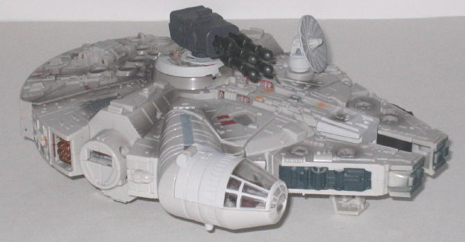
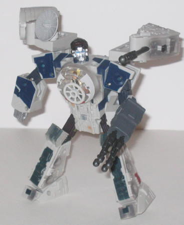
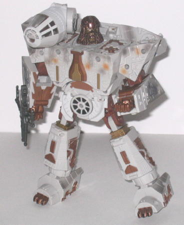

Price
: $35 U.S.
Difficulty of Transformation
: Hard
Color Scheme
: Dirty off-white, metallic
copper, dark navy blue, and some silver, dull metallic brown, white, black,
metallic gold, dark red, clear plastic, dull orange, dark gray, transparent
light blue, very dark brown, dull pasty yellow, dull metallic gold, sky
blue, and charcoal bluish black
Overall Rating
: 8.9
Millennium Falcon (Combined Vehicle
Mode)

Individual Rating
: 9.6
As you'd expect from
a Star Wars Transformer, the vehicle mode-- in this case the combined form
of Han Solo, who forms the front half of the ship, and Chewbacca, who forms
the back half-- is solid, with pretty much no robot extras whatsoever (the
only exception is that if you look at the side, you can see Chewbacca's
hands in their respective slots) and very movie-accurate proportions. About
the only real downside is all the telltale cracks in between the different
pieces of the vehicle mode, but that's pretty much unavoidable for a Transformer.
Despite being made of two seperate Mechs, the vehicle mode holds together
extremely well all around. It also comes with several features-- first,
there's two little compartments for the miniature Han Solo and Chewbacca
figurines. The cockpit hanging out the right side holds one, while the
window on the center of the vehicle holds the other figurine. There's also
three seperate fold-out landing gear on the bottom to keep the Millennium
Falcon from laying directly on the ground. Han Solo's missile launcher
rests in a hole on the top center of the mode, and it you press a button
on the top of it, two two-pronged missiles shoot out of it. There's also
another spring-loaded missile launcher on the side of this mode, and Chewbacca's
crossbow fits snugly on the underside of this mode in case any Imperial
ships try to sneak up from below. The electronic features are also fantastic
to the point where they make me envious we don't have electronics this
good on the normal Transformer figures. There's two different buttons you
can press, one near the front of the ship, on a button made from the "belt
buckle" of Han Solo's Mech Mode, and another at the rear end of the ship,
under the rear engine. The front buttom activates one of many sound effects,
ranging from laser blasts to actual Han Solo lines from the movie, including
"She's the fastest ship in the fleet," "I've got a really bad feeling about
this," and "Ludicrous speed, GO!" (Okay, I made that last one up.) Two
red lights also come on when the button is pressed and stay on for about
8 seconds or so. The rear button, when pressed, activated one of many Chewbacca
grunts and snorts or more laser blasting effects. The engine also glows
blue for about eight seconds, and man, this light is BRIGHT. Heck, you
could almost rely on it in a blackout to see where you're going! One small
quibble about the electronics, however-- I do wish there was some way for
it to recognize which mode it's in, as it is rather odd to have the engine
light up and then hear a Chewbacca snort when it's in Millennium Falcon
mode.
Han Solo

Individual Rating
: 8.4
Han Solo is the weaker
of the two Mechs, but he's still quite good, and definitely one of the
better Star Wars Transformers. The proportions of his Mech mode are pretty
close to right-on, though his main body could stand to be a little shorter
and not quite as wide if looked at from a side angle-- that landing gear
piece that flips behind his butt in this mode looks especially out-of-place.
The only real vehicle extras are the two large Millennium Falcon panels
over his shoulders, and although they are blatantly kibble and don't really
add much to the mode, the don't get in the way either. Han Solo's sculpting
is pretty good, with a "belt" detailing around his waist and a very detailed
head sculpt with some cool feature such as a robotic "headset", though
I wish they hadn't gone to such extreme efforts to make it look like a
robotic Han face. Han Solo also has great articulation-- he can move at
the head, shoulders (at three places), elbows, wrists, hips (at two places),
and knees (at two places). His ankles can also move back and forth some,
but he's not all that stable to begin with seeing as how he's slightly
back heavy, so once you get him in a position where he stands up well enough
it's best not to fiddle around with him down there. For the most part,
the joints are very sturdy without being too tight, though the sliding
pieces that slide up the hands in this mode don't lock into place very
well at all, so the hands have a rather annoying tendency to slide back
into the lower arms. The fists can hold Han's weapon fairly well, but it
still doesn't fit into the fist hole quite as well as on most regular Transformers,
the designers of this line can seem to quite figure out how to get that
quite right yet. The addition of blue and some dark brown to the Millennium
Falcon color scheme goes fairly well with the light gray, even if it's
not the most attractive color scheme, and defnitely fits Han Solo's trademark
outfit in the movie and helps to differentiate his colors from Chewbacca's.
One last thing worthy of note is that Han Solo, like Chewbacca, is noticeably
bigger than most Star Wars Transformers in his Mech mode, being roughly
the same size as a Cybertron Voyager-class figure.
Chewbacca

Individual Rating
: 8.8
Chewbacca is certainly
not the first character I'd think of turning into a Star Wars Transformer--
heck, he's one of the last-- but it works surprisingly well considering
the vehicle mode, and the very attractive shade of metallic brownish copper
used on the Millennium Falcon off-white for both decoration and to simulate
"fur" is rather eye-catching. The sculpting used for Chewbacca's head is
excellent, and though I normally don't like the "robotic version of pilot
character" faces, in this case it works very well. The bending of pipes
to look like "fur", the sharp jaws, and the patches of circuitry here and
there look very, very nice. As you'd expect, they also beefed up Chewbacca
a bit more when compared to Han Solo, and his proportions are even more
on-target than Han's, with no major proportional oddities at all. I also
like the relocation of the Millennium Falcon's secondary cockpit onto Chewy's
shoulder, it kinda looks like a missile launcher. There are a few design
flaws that I think could've been easily corrected, however. The most obvious
one is the big rear-engine piece on Chewbacca's upper back-- it's very
obviously just a big piece of kibble, and what's worse, it's attached to
Chewy's head and doesn't lock into place at all, so Chewbacca's head can
sink down into his chest too easily. Also, because his hand doesn't quite
clear the sides of his lower arm in any position, he has a hard time holding
his crossbow steadily since the bulkier lower arms tend to pry the weapon
out of his hands over time. The foot construction is also just a tad odd--
due to the way Chewy transforms, the feet start just a little lower than
you think they would on the leg, but that's a minor concern. Finally, although
there's flaps on Chewbacca's waist to supposedly allow his upper legs to
move forward, they can only do so a little before running into a piece
of plastic on his upper waist that doesn't flip forward or move out of
the way at all. Other than that, though, Chewbacca has fairly good articluation--
he can move at the head, shoulders (at three points), elbows, wrists, hips,
and knees (at two points).
The Millennium Falcon set is a fairly good buy at $35, and though the vehicle mode is great as expected from the Star Wars Transformers line, both of the Mech modes are also some of the best of the line, and they're both durable, articulated toys. Highly recommended.
Review by Beastbot